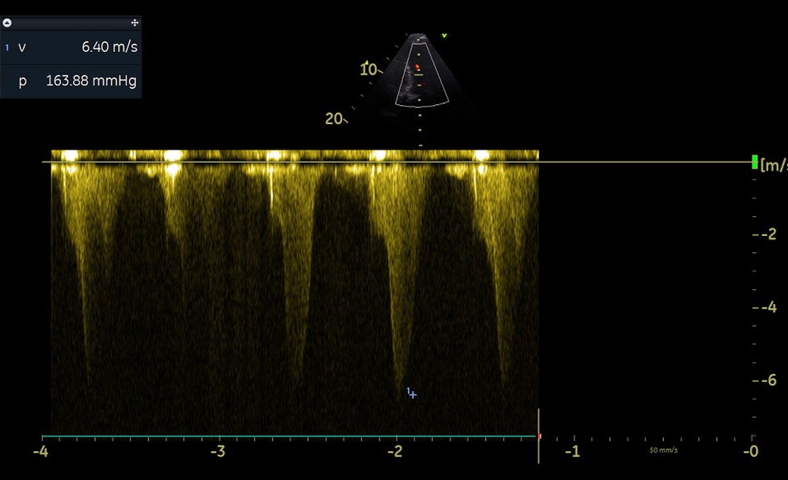
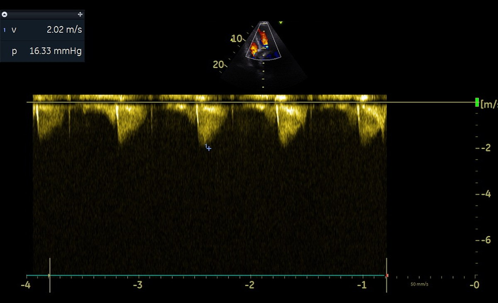

Flores MP1; Freire de Carvalho MVS1; Souza Neri AJ1;
Almeida PV2; Bomfim AB2; Vieira de Melo JP3;
Cavalcante LRS2; Filgueiras PHC1; Vieira de Melo RM1
1IDOR, Instituto D'Or de Pesquisa e Ensino, Salvador, BA2Universidade Federal da Bahia, Salvador, BA3Escola Bahiana de Medicina e Saúde Pública, Salvador, BA
Contexto
PacienteHomem, 82 anos. Cirrose hepática com hipertensão portal.
IndicaçãoEstenose aórtica importante sintomática. VE com remodelamento concêntrico e cavidade reduzida.
ImplanteBioprótese balão-expansível Sapien 3 Ultra Resilia nº 23, via femoral direita. Gradiente médio invasivo de 5 mmHg, refluxo mínimo.
+ 65 minPAM 45 mmHg, FC 110 bpm. Ecocardiograma à beira do leito.
Obstrução
2D apical
Toque para reproduzir
VE hipercontrátil. Obliteração sistólica da cavidade.
2D apical
Toque para reproduzir
Outro plano, mesma dinâmica de esvaziamento.
Doppler colorido
Toque para reproduzir
Aliasing intracavitário, e não na prótese.
Doppler colorido
Toque para reproduzir
Coluna de turbulência da região médio-ventricular até a via de saída.
Doppler contínuo

Envelope côncavo com pico tardio. Vmáx 6,40 m/s.
163,88
mmHg de gradiente intraventricular
Conduta
Aumentar pré-carga, reduzir contratilidade
Expansão volêmica de 1.500 mL
Betabloqueador endovenoso
Vasopressor em baixa vazão, para manter a pós-carga
Ecocardiograma seriado à beira do leito
Evitados
Inotrópico
Cronotrópico positivo
Diurético
Reversão

Doppler contínuoSegure para reverter
163,88mmHg
Envelope côncavo com pico tardio, Vmáx 6,40 m/sEnvelope baixo e arredondado, Vmáx 2,02 m/s
2D apical
Toque para reproduzir
Cavidade preenchida. Volume sistólico final recuperado.
Doppler colorido
Toque para reproduzir
Fluxo laminar. Prótese normofuncionante.
POD 1Episódio isolado de hipotensão, sem recorrência do gradiente.
POD 2FEVE 73%, sem gradiente intraventricular, sem droga vasoativa.
AltaEm boas condições clínicas.
Gráficos
Gradientes ao longo do internamento
Intraventricular dinâmico e médio transprotético, em mmHg